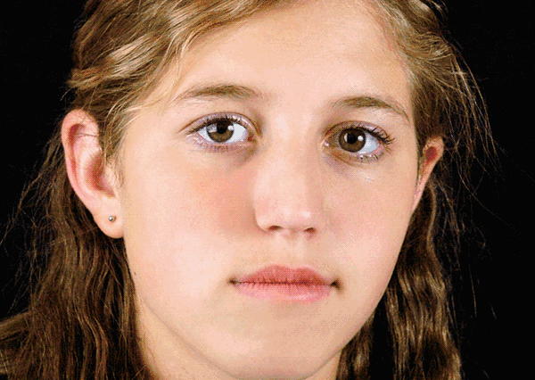
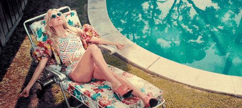
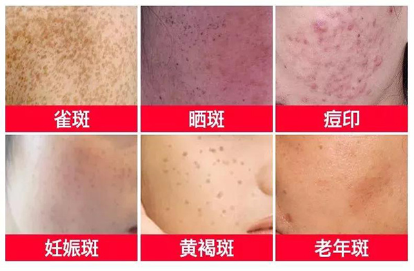
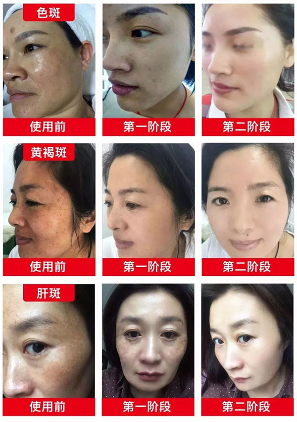
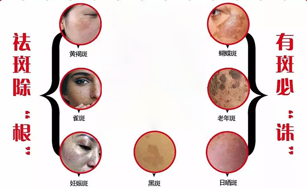
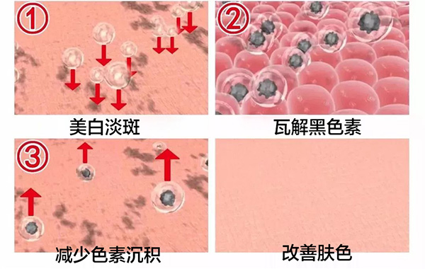
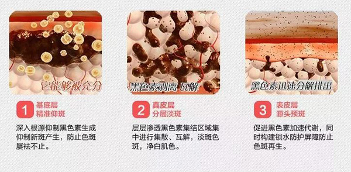
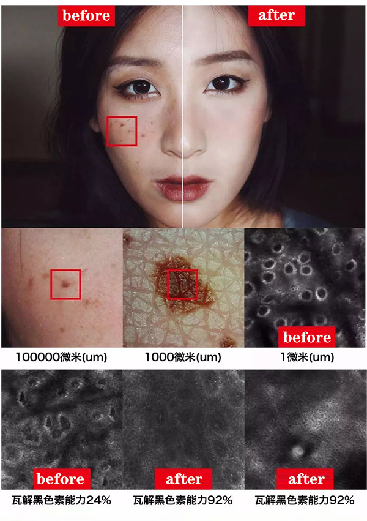
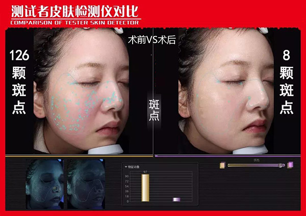
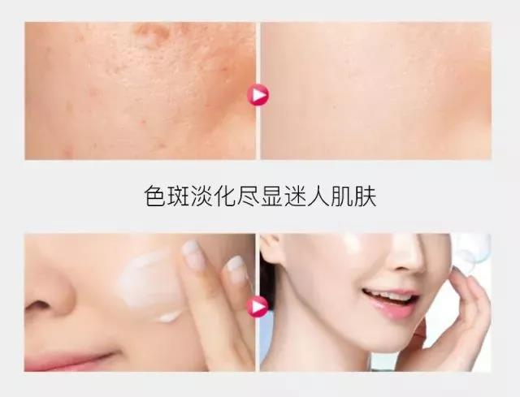

化完妆的你，皮肤水嫩
毛孔收细小、脸蛋精致
但是卸妆后要是像这样的话
不过我觉得还是得把斑点去掉
才是重中之重！

偏偏色斑又是美白中最难解决攻克的
曾经以为只有年纪大了才会长斑的
后来才明白
长斑不关年纪的事情！

长时间暴晒，会长斑！
皮肤过敏，会长斑！
生孩子，会长斑！
长时间面对电脑，会长斑！
肌肤老化，会长斑！
卸妆卸不干净 ，也会长斑!

虽然说化妆是可以遮住一些难看的斑点
但化妆品才是皮肤最大的杀手
有的还添加了大量的铅汞等重金属
不但不能从根部淡化色斑
长期使用会引发过敏性皮炎，甚至皮肤癌
尤其是在闷热的夏天
厚厚的一层堆在脸上
毛孔不能呼吸
简直就是在虐待自己的皮肤
还会加速斑的生长！让人显老！
难道想去掉脸上的色斑
就没有安全又有效的办法吗
直到我体验了这款获誉无数的
SE双核祛斑
我的斑点终于被拯救了
先来给你们看看前后对比图
这是一、二、三阶段的效果
脸上的色斑明显减少
脸看上去白净了三个度！

常见的黄褐斑、雀斑、妊娠斑
蝴蝶斑、老年斑、晒斑、黑斑等
都能有效祛除

有效抑制排出黑色素
无论什么色斑
说到底都是因为黑色素沉淀
想要祛斑就要从抑制黑色素开始
SE双核祛斑
可以在黑色素安营扎寨之前将其消灭
阻止黑色素的沉积
减少已经生成、沉淀的黑色素
阻隔其向表层细胞的转移
加速细胞新陈代谢
加快黑色素角质细胞脱落
同时配合其他活性成分
从而起到美白、淡斑的效果

能够穿透肌底层进行深度淡斑
对于黄褐斑、黑板、日晒斑
药物过敏一流下来的色素沉着
都有很强的治疗作用

同时，SE双核祛斑
相对更稳定，又属植萃成分
在祛斑效果上更温和有效

这是使用28天的效果
脸上的斑点从126颗减少到了8颗
脸看上去白净了不少
效果简直超级明显

约28天左右就可以看到明显的效果
中度的，50天左右可以看见效果
重度的，80天左右可以看见效果
